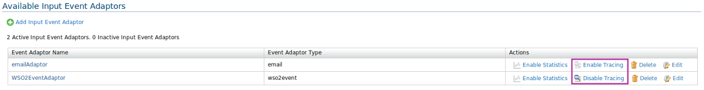
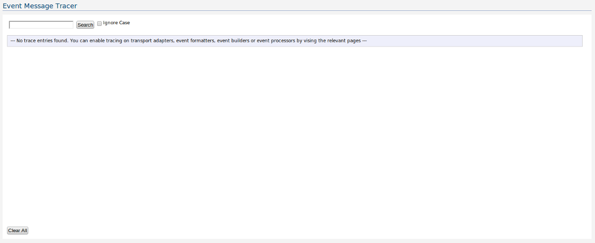
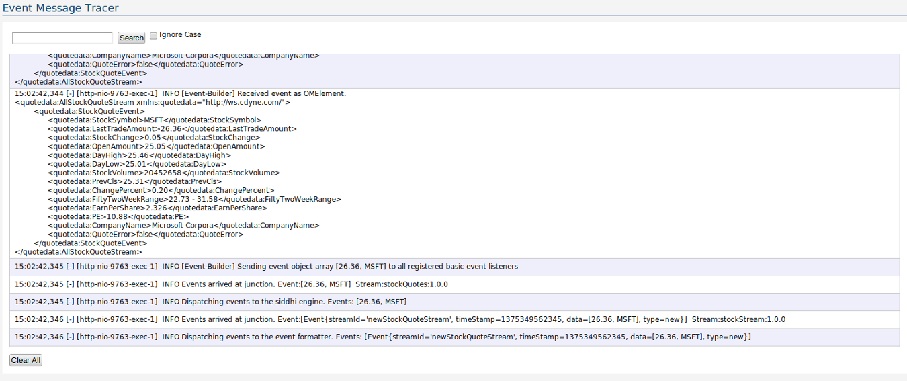

CEP Event Tracer is an important tool to monitor events. This tool provides huge functionality to trace the event in each and every component. Event tracer will help to check the event when travels along the components. But user needs to enable the tracing in each configuration manually because by default tracing is disabled.�

As shown above, you can simply enable or disable event tracing for Input Event Adaptor configuration. You can follow the sample approach for Output Event Adaptor, Event Builder, Event Processor and Event Formatter as well, But consider any change in tracing status will lead to redeployment of necessary configuration.
Follow the instructions below to access the Event Tracer.
1. Click on "Monitor" on the left side to access the "Monitor" menu.
2. In the "Monitor" menu, click on "Event Tracer."
3. The "Event Tracer" page appears.

4. After tracing enabled for necessary configuration, you can see how the incoming events traverse through the components of the CEP and how the events got changed. If you click the Clear All button all the event related data will be deleted permanently.

Here you can use the search option to refine the data in the UI as shown below.